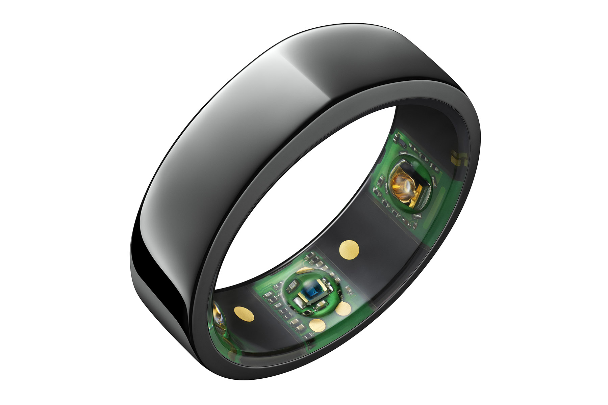

Wearable Sensor May Signal You’re Developing COVID-19 – Even If Your Symptoms Are Subtle

The Oura Ring is a wearable sensor that continuously measures sleep and wakefulness, heart and respiratory rates and temperature.Photo courtesy of Oura
A smart ring that generates continuous temperature data may foreshadow COVID-19, even in cases when infection is not suspected.The device, which may be a better illness indicator than a thermometer, could lead to earlier isolation and testing, curbing the spread of infectious diseases, according to a preliminary study led by UC San Francisco and UC San Diego.
An analysis of data from 50 people previously infected with COVID-19, published online in the peer-reviewed journal
Scientific Reports on Dec.14, 2020, found that data obtained from the commercially available smart ring accurately identified higher temperatures in people with symptoms of COVID-19.
While it is not known how effectively the smart ring can detect asymptomatic COVID-19, which affects between 10 percent to 70 percent of those infected according to the Centers for Disease Control and Prevention, the authors reported that for 38 of the 50 participants, fever was identified when symptoms were unreported or even unnoticed.
Of note, the researchers analyzed weeks of temperature data to determine typical ranges for each of the 50 participants.'Many factors impact body temperature,' said principal investigator and senior author Ashley Mason, PhD, assistant professor in the UCSF Department of Psychiatry and faculty at the UCSF Osher Center for Integrative Medicine.'Single-point temperature measurement is not very meaningful.People go in and out of fever, and a temperature that is clearly elevated for one person may not be a major aberration for another person.Continual temperature information can better identify fever.'
According to co-author Frederick Hecht, MD, professor of medicine and director of research at the UCSF Osher Center for Integrative Medicine, this work is 'important for showing the potential of wearable devices in early detection of COVID-19, as well as other infectious diseases.'
While the number of study participants was too small to extrapolate for the whole population, the authors said they were encouraged that the smart ring detected illness when symptoms were subtle or unnoticed.'This raises the question of how many asymptomatic cases are truly asymptomatic and how many might just be unnoticed or unreported,' said first author Benjamin Smarr, PhD, an assistant professor in the Department of Bioengineering and the Halicioğlu Data Science Institute at UC San Diego.'By using wearable technology, we’re able to query the body directly.'
To conduct the study, the researchers used the Oura Ring, a wearable sensor made by the Finnish startup Oura, which pairs to a mobile app.The ring continuously measures sleep and wakefulness, heart and respiratory rates, and temperature.The researchers provided the rings to nearly 3,400 health care workers across the U.S., and worked with Oura to invite existing users to participate in the study via the Oura app, resulting in enrollment of more than 65,000 participants worldwide in a now concluded prospective, observational study, which the UC researchers are preparing for publication.
The participants in the preliminary study reported that they had previously been infected with COVID-19.A continuous record of their biomonitoring data was still available for analysis from the weeks before their infection, through the time of enrollment until the end of the study.
No-touch thermometers that detect infrared radiation from the forehead are used to quickly screen for fever in airports and offices and are believed to detect some COVID-19 cases, but many studies suggest their value is limited.The ring records temperature all the time, so each measurement is contextualized by the history of that individual, making relative elevations much easier to spot.'Context matters in temperature assessment,' Smarr emphasized.
Other illness-associated changes that the rings detect included increased heart rate, reduced heart rate variability and increased respiration rate, but these changes were not as strongly correlated, the authors noted.
The researchers are using data from the larger, prospective study to develop an algorithm from data collected by wearable devices that can identify when it appears that the user is becoming sick.Mason’s team can then trigger a request for the user to complete with a self-collection COVID-19 test kit.The researchers will evaluate the algorithm in a new study of 4,000 additional participants.
'The hope is that people infected with COVID will be able to prepare and isolate sooner, call their doctor sooner, notify any folks they’ve been in contact with sooner, and not spread the virus,' Mason said.
Co-Authors: Sarah Fisher, Anoushka Chowdhary, Karena Puldon, Adam Rao and Frederick Hecht from UCSF; Kirstin Aschbacher from Oura and UCSF; and Stephen Dilchert from CUNY, New York.
Funding: Oura Health Oy, #Startsmall, U.S. Department of Defense.
Disclosures: Aschbacher is an employee of Oura Health Oy, in addition to holding an adjunct associate professor position at UCSF.Smarr has worked as a paid consultant at Oura Health Oy within the last 12 months, although not during this research project.
The University of California, San Francisco (UCSF) is exclusively focused on the health sciences and is dedicated to promoting health worldwide through advanced biomedical research, graduate-level education in the life sciences and health professions, and excellence in patient care.UCSF Health, which serves as UCSF’s primary academic medical center, includes top-ranked specialty hospitals and other clinical programs, and has affiliations throughout the Bay Area.
Posted On: 2020-12-14T00:00:00
Content Date: 2020-12-14
Download Date: 2021-04-21
Document ID: L0C04AOOO